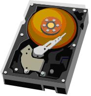
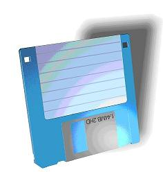
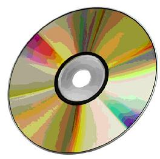
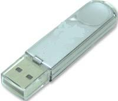

STORAGE MEDIA
Storage keeps data, information and instructions for use in the
future. All computers use storage to keep the software that makes
the hardware work.
As a user you store a variety of data
and information on your computer or on storage media. Storage media
are the physical materials on which data, information and
instructions are kept. When a user saves information or data to a
storage medium he or she is storing a file, and this process is
called writing.
When the file is opened the process is
called reading.
Common storage media are
Hard Drive
This storage medium which looks like the one below, is a hard drive. This medium comes with the computer and is always inside the computer.It stores all the programs that the computer needs to work. In addition users store their data and information on the hard drive.

A hard disk drive (HDD), hard disk, hard drive, or fixed disk[b] is
an electro-mechanical data storage device that uses magnetic
storage to store and retrieve digital data using one or more rigid
rapidly rotating platters coated with magnetic material. The
platters are paired with magnetic heads, usually arranged on a
moving actuator arm, which read and write data to the platter
surfaces.Data is accessed in a random-access manner, meaning that
individual blocks of data can be stored and retrieved in any order.
HDDs are a type of non-volatile storage, retaining stored data even
when powered off.
Introduced by IBM in 1956, HDDs were the
dominant secondary storage device for general-purpose computers
beginning in the early 1960s. HDDs maintained this position into
the modern era of servers and personal computers, though personal
computing devices produced in large volume, like cell phones and
tablets, rely on flash products. More than 224 companies have
produced HDDs historically, though after extensive industry
consolidation most units are manufactured by Seagate, Toshiba, and
Western Digital. HDDs dominate the volume of storage produced
(exabytes per year) for servers. Though production is growing
slowly, sales revenues and unit shipments are declining because
solid-state drives (SSDs) have higher data-transfer rates, higher
areal storage density, better reliability, and much lower latency
and access times.
The revenues for SSDs, most of which use
NAND, slightly exceed those for HDDs. Flash storage products had
more than twice the revenue of hard disk drives as of 2017. Though
SSDs have four to nine times higher cost per bit, they are
replacing HDDs in applications where speed, power consumption,
small size, high capacity and durability are important. Cost per
bit for SSDs is falling, and the price premium over HDDs has
narrowed.
The primary characteristics of an HDD are its
capacity and performance. Capacity is specified in unit prefixes
corresponding to powers of 1000: a 1-terabyte (TB) drive has a
capacity of 1,000 gigabytes (GB; where 1 gigabyte = 1 billion
bytes). Typically, some of an HDD's capacity is unavailable to the
user because it is used by the file system and the computer
operating system, and possibly inbuilt redundancy for error
correction and recovery. Also there is confusion regarding storage
capacity, since capacities are stated in decimal Gigabytes (powers
of 10) by HDD manufacturers, whereas some operating systems report
capacities in binary Gibibytes, which results in a smaller number
than advertised. Performance is specified by the time required to
move the heads to a track or cylinder (average access time) adding
the time it takes for the desired sector to move under the head
(average latency, which is a function of the physical rotational
speed in revolutions per minute), and finally the speed at which
the data is transmitted (data rate).
The two most common
form factors for modern HDDs are 3.5-inch, for desktop computers,
and 2.5-inch, primarily for laptops. HDDs are connected to systems
by standard interface cables such as PATA (Parallel ATA), SATA
(Serial ATA), USB or SAS (Serial Attached SCSI) cables.
Floppy Disk
This storage medium is considered to be a portable storage medium. You put it into the computer save your information on it, take it out, and take it with you wherever you go. 
A floppy disk, also known as a floppy, diskette, or simply disk, is
a type of disk storage composed of a disk of thin and flexible
magnetic storage medium, sealed in a rectangular plastic enclosure
lined with fabric that removes dust particles. Floppy disks are
read and written by a floppy disk drive (FDD).
Floppy
disks, initially as 8-inch (203 mm) media[1] and later in 5
1/4-inch (133 mm) and 3 1/2 inch (90 mm) sizes, were a ubiquitous
form of data storage and exchange from the mid-1970s into the first
years of the 21st century.[2] By 2006, computers were rarely
manufactured with installed floppy disk drives; 3 1/2-inch floppy
disks can be used with an external USB floppy disk drive, but USB
drives for 5 1/4-inch, 8-inch, and non-standard diskettes are rare
to non-existent. These formats are usually handled by older
equipment.
The prevalence of floppy disks in late 20th
century culture was such that many electronic and software programs
still use the floppy disks as save icons. While floppy disk drives
still have some limited uses, especially with legacy industrial
computer equipment, they have been superseded by data storage
methods with much greater capacity and transfer speeds, such as USB
flash drives, memory cards, optical discs and storage available
through computer networks such as cloud storage.
CD & DVD
These types of storage media hold much more information than a floppy disk. They are also considered portable storage. These types of storage media come in different forms. This means that there are CDs and DVDs that you can only save information on but you cannot erase the information. In addition there are those that can both save information on and erase the information you have saved.
CD stands for Compact Disc was the primary step towards the thought
of digital coding of the info. It uses a novel methodology of
coding within which a 14-bit code indicates a computer memory unit
and this coding technique conjointly helps in error detection. it
had been an acceptable replacement for the memory device because it
offered the low-priced answer for storing a big quantity of
knowledge.
DVD stands for Digital Versatile Disk provides
another for the videotape utilized in tape recorder (Video
container Recorder) and fixed storage utilized in computer because
the video disc will acquire seven times larger quantity of the info
relative to CD. It renders videos with wonderful image quality and
random access. A video disc is constructed from a similar material
because the CD however the method and therefore the layers area
unit completely different, it's used from each of the edges like 2
CDs area unit projected along. In DVD, RS-PC and EFMplus are used
as the error correction codes.
There are few differences between CD and DVD, which are given below:
| CD | DVD |
| The acquire size of CD is 700 MB. | While the acquire size of DVD is 4.7 GB to 17 GB. |
| In CD, the recording or metal layer is situated on the top of disk. | While in DVD, the recording or metal layer is situated in middle of disk. |
| There is only single pit layer in CD. | While there are double layers of pits in DVD. |
| In CD, there is 1.6 micrometer space between the spiral's loops. | While in DVD, there is 0.74 micrometer space between the spiral's loops. |
| A CD holds the 0.834 micrometer space between the pits. | While it holds the 0.4 micrometer space between the pits. |
| In CD, CIRC and EFMP are used as the error correction codes. | While In DVD, RS-PC and EFMplus are used as the error correction codes. |
| There can cause the damage in metal layer after the Removal of the adhesive labels, in CD. | While there is caused the imbalance in the spin after the Removal of the adhesive labels, in DVD. |
| In CD, the data transfer rate is 1.4 MB to 1.6 MB/sec. | While in DVD, the data transfer rate is 11 MB/sec. |
| The channel bit length in Cd is 300 nanometer. | While the channel bit length in DVD is 113 nanometer which is less than CD's channel bit length. |
| The numeric aperture of CD is 0.45. | While the numeric aperture of DVD is 0.6. |
| The thickness of CD is 1.2 mm. | While the thickness of DVD is 0.6 mm. |
USB Flash Drive
This is a storage medium that is very easy to carry around and it also holds more data than a floppy disk. As you can see from the picture below it is very small when compared with the others.
A USB flash drive is a data storage device that includes flash
memory with an integrated USB interface. It is typically removable,
rewritable and much smaller than an optical disc. Most weigh less
than 30 g . Since first appearing on the market in late 2000, as
with virtually all other computer memory devices, storage
capacities have risen while prices have dropped. As of March 2016,
flash drives with anywhere from 8 to 256 gigabytes (GB) were
frequently sold, while 512 GB and 1 terabyte (TB) units were less
frequent. As of 2018, 2 TB flash drives were the largest available
in terms of storage capacity. Some allow up to 100,000 write/erase
cycles, depending on the exact type of memory chip used, and are
thought to last between 10 and 100 years under normal circumstances
(shelf storage time).
USB flash drives are often used for
storage, data back-up and transfer of computer files. Compared with
floppy disks or CDs, they are smaller, faster, have significantly
more capacity, and are more durable due to a lack of moving parts.
Additionally, they are immune to electromagnetic interference
(unlike floppy disks), and are unharmed by surface scratches
(unlike CDs). Until about 2005, most desktop and laptop computers
were supplied with floppy disk drives in addition to USB ports, but
floppy disk drives became obsolete after widespread adoption of USB
ports and the larger USB drive capacity compared to the "1.44
megabyte" (1440 kibibyte) 3.5-inch floppy disk.
USB flash
drives use the USB mass storage device class standard, supported
natively by modern operating systems such as Windows, Linux, macOS
and other Unix-like systems, as well as many BIOS boot ROMs. USB
drives with USB 2.0 support can store more data and transfer faster
than much larger optical disc drives like CD-RW or DVD-RW drives
and can be read by many other systems such as the Xbox One,
PlayStation 4, DVD players, automobile entertainment systems, and
in a number of handheld devices such as smartphones and tablet
computers, though the electronically similar SD card is better
suited for those devices.
A flash drive consists of a
small printed circuit board carrying the circuit elements and a USB
connector, insulated electrically and protected inside a plastic,
metal, or rubberized case, which can be carried in a pocket or on a
key chain, for example. The USB connector may be protected by a
removable cap or by retracting into the body of the drive, although
it is not likely to be damaged if unprotected. Most flash drives
use a standard type-A USB connection allowing connection with a
port on a personal computer, but drives for other interfaces also
exist. USB flash drives draw power from the computer via the USB
connection. Some devices combine the functionality of a portable
media player with USB flash storage; they require a battery only
when used to play music on the go.